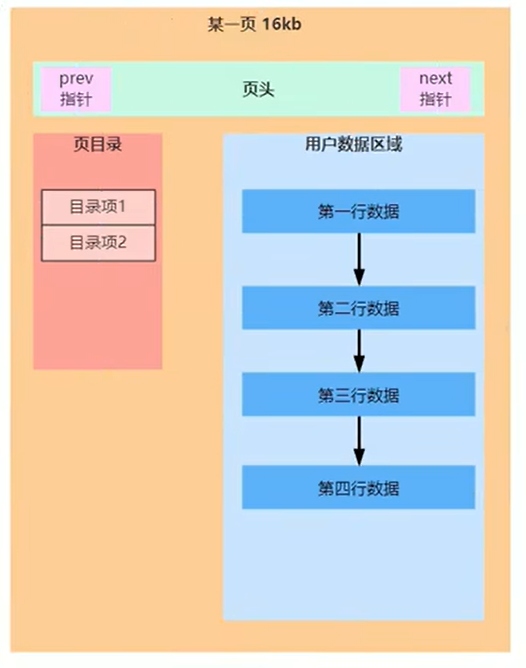
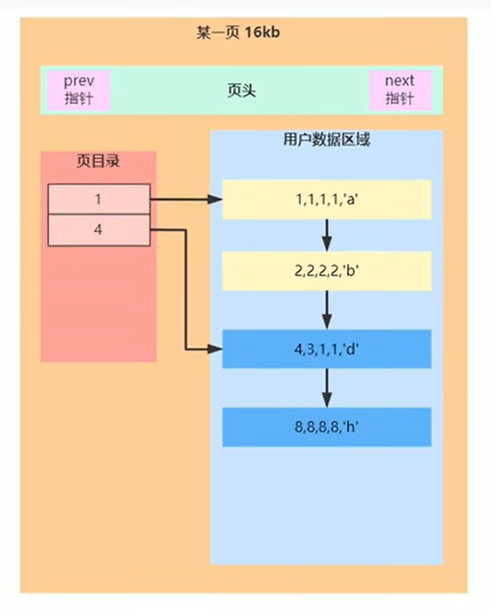
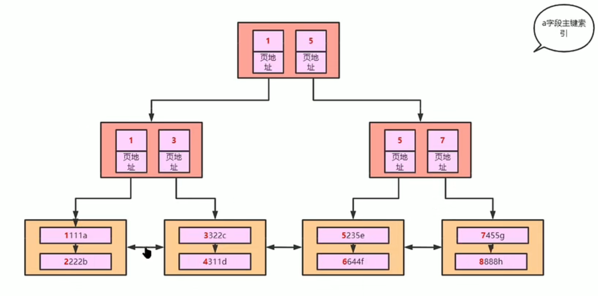
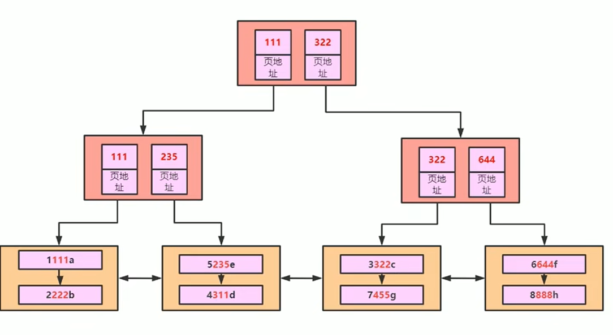
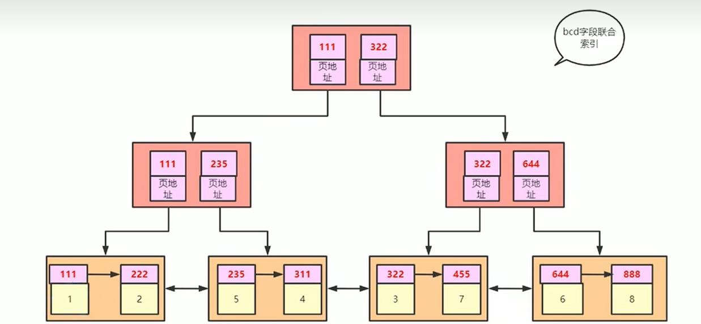

Mysql矢北1_索引及B+树
innoDB的索引B+树底层及一些现象的解释。
页的结构

省去一些基础知识，对于一个聚簇索引的B+树而言，它的叶子结点实际上是存的是页，一个页的组成如上图所示,分别对各个部分进行说明：
指针
一页的大小是16KB，存不满了显然就要放到下一个页当中去，两个页之间就需要靠指针来相互连接。
用户数据区域
存放用户数据的地方。
页目录
用来记录分组之后的用户数据，待会详细展开。

从上面这张图上，能得到很多内容：
自动的排序
把四项记录插入，发现最后用户数据区域的内容是按照第一个字段进行排序的（图上的数据的顺序并非插入的顺序），这意味着数据在插入到页中的时候发生了排序，为什么要这样做呢？（这里补充一点，按照第一个字段排序是因为我们没有指定哪个字段为主键，但是innoDB下面的聚簇索引会自动找一个主键生成一个聚簇索引的B+树出来）
因为排序在查找的时候能带来很多便利（虽然在数据一条条插入的时候确实会因为排序而浪费一点时间），比如按照图中这个样子，如果我查第一个字段，想找这个字段是3的记录，但是找到第三条记录，即第一个字段是4的时候都没有找到，那就肯定找不到了。因为后面都比3大，但是显然，如果我想找的是10000，那么这样的特性是发挥不出来的，再怎么说你都是使用的链表进行的数据管理，查找上还是慢。
页目录加快查找速度
这里就是空间换时间，观察图片中的颜色，能够发现有两组，颜色都不一样。实际上这就是使用了页目录，我两两一个分组，然后把每个分组的最小的值存到页目录中，再配上指针，以后要查找就可以先去页目录中找范围，找到了再去对应的组里面找，加快了链表的一个查询速度。
页表的层级管理

一个显然的事实是，这些页表都是存放在磁盘中的，如果我们想要使用这些页表，如何精准的找到他们是关键。
把上面的问题换个说法就是，已经知道了页表中存的内容和结构，怎么管理它们？实际上对于链表而言，思路其实是非常有限和贫瘠的，想要效率，就要牺牲空间，所以还是页目录的办法，可以单独使用一个页，来管理其他的页表。如上图所示。
同样的，管理的页表也有可能过多，怎么解决？还是一样的，再加一层就行了。一般而言由于管理的页表只放索引值和指针值，能存放的数据相当多，这样三阶的B+树能存放大约两三千万的数据量，这个时候也不适合再加一层了（导致要进行太多次磁盘IO的读取更慢了，不如重新弄个表了）。
以上就是整个页表的层级管理，也是我们看到的聚簇索引底层的B+树的实现。
联合索引及其相关问题

考虑联合索引的问题， 假设现在使用b、c、d三个字段作为联合索引（就是第二第三第四个字段），按照上图所示，假设我全程按照刚才主键索引的思路来，行不行呢？（可能要问三个字段咋排序啊？可以按照类似字符串比大小的方式来，先比第一个再比第二个）
实际上不太好，首先对于innoDB来说，它肯定有一个主键索引这是肯定的，如果我再建一个索引，就得把所有的数据全都复制一份过去有点浪费空间，其次，在改动数据的时候，比如我改的是f字段，跟你这bcd完全没有关系，由于你保存了所有的数据，导致还得帮你也改一次。如果我们有比较多的索引，那么更改一次消耗的时间可想而知。

以上是修改之后的联合索引结构（实际上非主键的索引底层应该都差不多长这样），能够看到，叶子结点上不再存数据了，只存索引，但是在每个页里面还会保有主键的值，也就是说根据这个联合索引查到结果之后还不够，还得用这个主键值回到主键索引中再查一次（这个过程也叫做回表，额外提一嘴，这里指的只是innoDB中的回表，和myisam中的有点区别）。
以下讨论一些常见的关于联合索引的问题及解释
where中的顺序问题会否触发最左匹配原则
答案是不会，考虑下面的sql语句
1 | select * from t1 where c=1 and d=1 and b=1; |
初看很容易认为不对，觉得b在最后不行，实际上可以，顺序不影响，只要你在这个where中，还是能走这个联合索引，即使就你一个或者带上其他的（这个其他的也得在这个索引字段中）。如果没有那就不行，触发最左匹配原则。
Using index condition
这是什么？
考虑这样一种情况，我传入判断的是b和d两个字段，c没给，那么这个给法有可能让我们走到某一页中去但是没法精确的锁定值，需要比较，在5.6版本之前，做法是先使用主键进行回表，把拿到的数据值再和后面的c进行比较，但是5.6之后就不这样了，是先继续和页表中存放的索引值进行比较，确定好了之后再去使用主键进行回表操作，这样显然就快很多了。
这样的联合索引下范围查找可以嘛
考虑以下的sql语句
1 | select * from t1 where b>1; |
走索引还是全表扫描？实际上这需要考虑你这个1的位置，试想一下，如果这个1存在非常靠前的位置（就像上一张图所表示的那样），那么你要额外要做的就是非常多的回表操作，这个工作量显然不能接受，还不如全表扫描呢。
但是反过来说，如果要找的这个位置非常靠后，往后找一个就行了，然后走两三次回表，那么比全表扫描还是要快上不少的。
覆盖索引
理解了之间所说的存储底层，覆盖索引就很好理解了，就是你要查的内容刚好就在整个索引中，不需要回表再查其他字段了。比如你要查b、c、d字段的内容，都不用回表。
值得注意的是，查a也不用回表，因为重看上面那张图会发现，为了实现回表，这张表中还存放了主键a字段，这一点不能忽视。
不加where的情况下搜索bcd中的一个字段
1 | seect b from t1; |
不加where，乍一看好像和bcd索引没啥关系才是，但是实际上不是的，还是可以走索引。
是效率问题导致了这种情况，现在我们有两个索引树，一个是主键索引的，一个是bcd创建的联合索引。实际上都是从页上找数据，但是，第一点，bcd创建的联合索引去搜的话因为会引发覆盖索引所以不会回表。第二点，由于bcd的联合索引树上叶子结点上的页表中存的是不完整的数据，所以一张表上理论上可以存更多的数据，由此带来的减少页表中的移动是选择使用这个索引树的原因。
order by
1 | select * from t1 order by b,c,d; |
如果是上述sql语句的话，走索引还是全表扫描?
考虑全表扫描，拿到数据之后会在内存中排序。考虑bcd索引，已经是排好序的了，看起来后者更好，但是实际上不是的，由于bcd索引中存储的是不完整的数据，所以还需要回表，这个过程是不能够接受的。
数据类型转换中的坑
假设a字段是int类型， 而e字段是 varchar类型，mysql已经为a字段建立了主键索引，现在为e也建立一个索引。考虑以下四条sql语句：
1 | select * from t1 where a=1; |
结果是，前三条都可以走索引，最后一条不行。
其逻辑是，在mysql中，如果两个类型不一样，至少说对于这样的整形和字符型来说，它的转换很死板，分为两种情况：
- 非纯数字字符串：比如‘abc’这种，那就直接当做0看待。
- 纯数字字符串：比如’123‘这种，转换成数字。
为什么对字段操作会导致索引失效
可以在数据类型转换的基础上对这个问题进行进一步的探讨，考虑这样一个问题：
1 | select * from t1 where e=1; |
那么根据mysql中数据转换的原则，字符串是要先变成数字再说的，如果这样的过程要走索引树，那么会直接把这棵树上的索引内容给更改掉。首先，更改完了之后的索引树大概率已经没啥用了（字符都变成数字了），其次mysql也不会帮你改回来。
所以可想而知，比如对于主键索引a字段，我在操作的时候写一个where a+1=1, 那也会索引失效，其底层问题还是在于这样会修改索引树甚至损坏索引树。